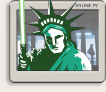

Posted By JediRob on 4/5/2005 6:59:46 PM EST
Number of people currently in line: 0
A communication disruption can mean only one thing.....NYLine TV. That's right kids, NYLine TV is back and more powerful then you can possibly imagine. We kick off with a feature chronicling the "midnight madness" frenzy at Toys "R" Us in Times Square on April 1st. But there were no fools (or following fools) this night, just our fellow fans doing what we do best. Standing in line!!
Produced by our own Vince Hardy, this piece is available now and is a must see for everyone who was there and all who missed the action. And this is only the beginning folks, like every other aspect of this culminating event, we're going bigger and better, so expect the most ambitious and entertaining NYLine TV segments yet. Speaking of which also be sure to visit our archives to view our past NYLine TV episodes.
See you on The Line.